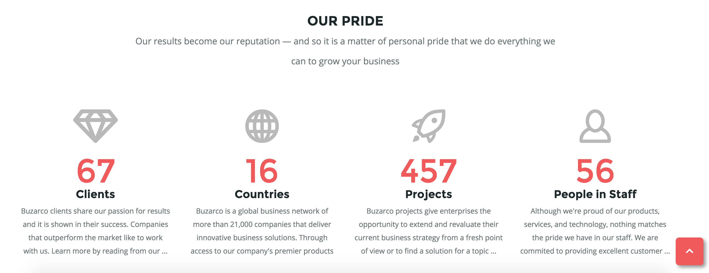

<WSP>
web standards project
About Myself
My name is Matthew Drapchaty, I prefer go by Matt, but most of my close friends call me Drap. I am 25 years old, currently living in San Jose, California, although I am moving to Colorado Springs, Colorado, this month and am quite excited about it. The things I enjoy most in life are snowboarding, music, friends and family, and anything involving a computer, such as gaming, coding, and learning new things. I am fairly new to web design and web development, with my first experiences being Full Sail, but feel that this is a perfect fit for me as it allows me to exercise critical and cognitive thinking, which is where I feel my mind works best, while still being able to express an artistic side, which is something I am often passionate about, but admittedly not as naturally gifted in. In school I always excelled as a math and science student as opposed to art and english, however growing up drawing was a big passion of mine and as an adult I enjoy painting models and other expressive artistic activites.
Component Library
Drop-Down Menu Header
What I Hope To Practice/Learn?
Drop down navigation is something that is seen in almost any decent web desgin, although it is something I have done before, I hope to practice it and begin to feel more confident in using this component in my regular WDD use.
How This Relates To What I Have/Will Learn in WDD.
As I have said, this is a component that every good web devloper should be aware of, and is in fact something that has been taught throughout this degree program on a few occasions.
How I might Build This
- Create component as <header>.
- Establish company logo with <h1> or <img>.
- <nav> containing <ul> with multiple <li>, each containing <a>.
- Dropdown items will be a <ul> inside of the corresponding <li>.
- Each <ul> that drops down will contain multipl <li>, each with <a>.

Count-up numbers upon scroll
What I Hope To Practice/Learn?
This is a new feature to me, and something I have not seen before, however I can assume that .animate is being used to case the numbers to go up upon scrolling onto the conent. I hope to learn not only how to get the numbers to animate correctly, but also how to set that to trigger upon becoming visible to the user.
How This Relates To What I Have/Will Learn in WDD.
This relates to WDD because it is using development methods such as .animate, again I am asuming, and draws a great deal of attention from the user to this component by doing so. Learning a multitude of tricks like this is what I believe will take my web designs from ordinary to extraordinary.
How I might Build This
- Create 4 <div> each with <h3> and <p> inside.
- Each <div> will also contain an icon <img> and a number.
- use .animate to get the number to count upwards towards the target number, over a set time, upon scrolling upon the <div>.
Image Slide
What I Hope To Practice/Learn?
This component looks fantastic and will help me master .animate with positioning, direction, and timing. The img's are also links and have a :hover affect which looks really great and brings an overlay with an icon over the img. This is something that is very new and unfamiliar to me and will be a great asset in my WDD arsenal, especially learning the code to make it work as opposed to using an external js library.
How This Relates To What I Have/Will Learn in WDD.
This relates to what i will be learning in my WDD program because it is something that looks sharp and grabs attention. It is also more advanced than just having images and reguires some use of .animate and the know how to make it move in the intended directions and end up in a coordianted stylish way.
How I might Build This
- Use a <h3> to create a title.
- Create several <img> that contain <a>.
- Create a a:hover affect for each img so that upon hover an overlay and icon appear.
- Use .animate or .slide to get these <img> to slide into a position form multiple different directions over a set time.

Animate Button
What I Hope To Practice/Learn?
This is also a :hover and .animate effect. These seem to be the most appealing to the eye, and again this is something I have seen, but have not exactly practiced or used before. I have used :hover effects on buttons, but not with an animated slide or transition like is present here. I suspect this component may be a combination of css transition and javascript .animate. I think it will look nice and help me tackle button animation head on to be able to make impressive buttons with ease.
How This Relates To What I Have/Will Learn in WDD.
This is a very standard component( button ) , that is made much more appealing. Most websites contain buttons, and adding a :hover effect to demonstrate that a component is clickable is key for users to fully understand what they are working with. This is something I will use throughout the rest of my WDD program as well as in most if not all future websites I will be creating.
How I might Build This
- Create an html <button> next to a corresponding form or CTA.
- Label <button> with an approprite action on it (verb) so the user know what action he or she will take upon clicking it.
- Using css transition property and or :hover, possibly in combination with javascript/jquery .animate/.slide methods to create this effect.

Automated-Accordion With Corresponding Links(Featured)
What I Hope To Practice/Learn?
The accordion is something I have used before, but is new and I don't have a very strong understanding of it yet. This month I hope to strengthen that understanding immensely. I also hope to learn how to get the accordion to cycle through the 'tabs' on its own on a timer, while getting the dot links below to change to illustrate which tab is currently being veiwed
How This Relates To What I Have/Will Learn in WDD.
How I might Build This
- Create a <section> with a <h3>
- <p> to give some context to what the viewer is seeing
- Create 3 <div> that will represent each 'tab' that will be cycled through. each with a <img>, <h3>, and <p>
- Using Javascript/Jquery create an accordion that will cyle through the 3 <div>, with .hide/.show
- Create 3 links that are circle icons, each one corresponding to one of the <div>, and animating to show which one is currently active.
Style Guide
Colors: #FFFFFF, #545859, #000000
Fonts: Sans-Serif